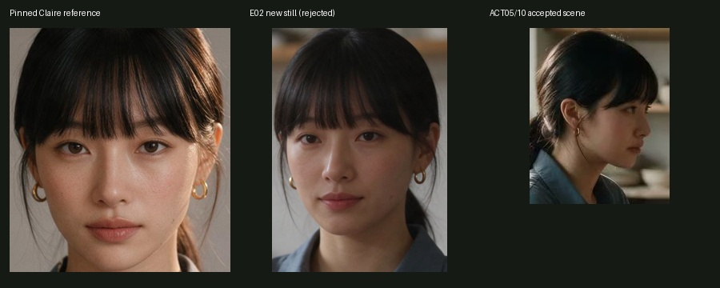
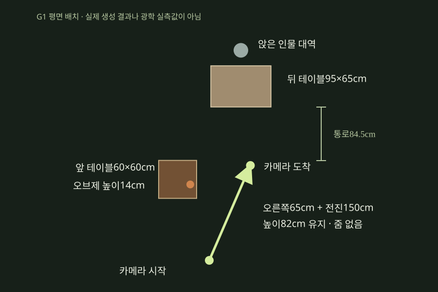
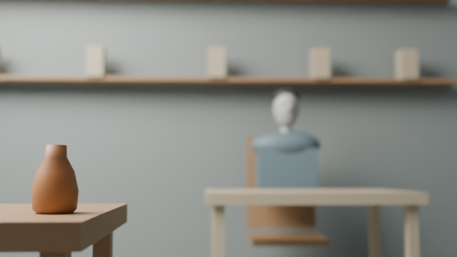
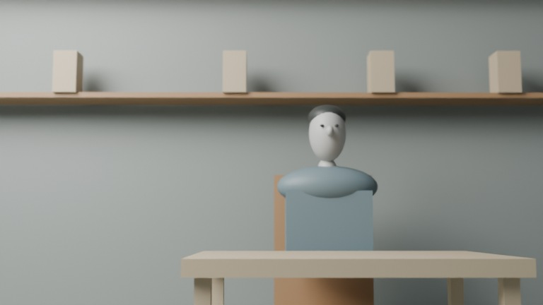
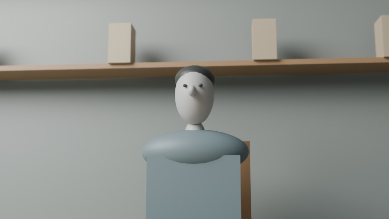
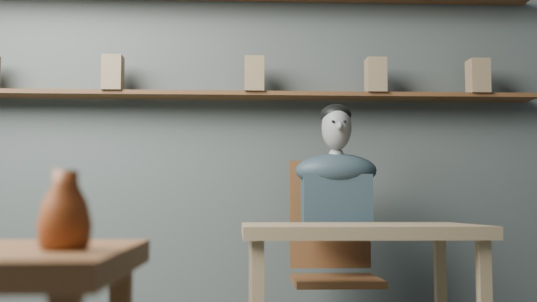

E02 / NEW DIRECTION / FREE G0 · G1 / 2026.11.19
앞 오브제에서,
뒤 인물로.
앞 테이블의 오브제 높이에서 출발해, 뒤편 다른 테이블에 앉은 Claire를 드러내는 로우앵글 이동 샷입니다.
아래 회색 인물은 공간·카메라 검토용 대역입니다. 실제 Claire 영상이나 인물 동일성 검증 결과가 아닙니다. 이번 검토의 유료 API 요청0 · 생성 비용USD0.
이전 E02는 인물이 기존 Claire와 다르다는 피드백으로 시작 스틸 선택을 해제했습니다. 헤어·의상 유사성으로 얼굴 동일성을 통과시킨 검수를 철회했습니다.
먼저 같은 Claire여야 합니다.

새 장면은 얼굴이 선명한 공간 확인 스틸부터 만들고, 기준 얼굴과 기존 확정 장면에 대조합니다. 눈·코·입·턱·성인 인상과 헤어·귀걸이를 함께 검토하며, 다른 얼굴이면 영상으로 진행하지 않습니다. 초점 흐림으로 얼굴 차이를 가리지 않습니다.
철회한 E02의 얼굴·스틸·파생 영상은 새 생성의 신원 참조나 첫 프레임으로 사용하지 않습니다.
두 개의 테이블, 하나의 방

앞에는60×60cm 테이블과14cm 무광 도자기 오브제, 뒤에는95×65cm 테이블과 앉은 인물을 둡니다. 카메라는 상판74cm보다 조금 높은82cm를 유지합니다. 같은 벽·선반·창빛이 공간을 연결하고, 서로 어긋난 상판의 옆선과 각자의 다리가 두 테이블을 구분합니다.
모든 치수는3D 설계값입니다. 로우앵글 모든 프레임에서 바닥 전체가 보이는 것은 아니며, 통로 간격은 평면도와 실제 블렌드 구조로 검증했습니다. AI 실사 출력의 비례·광학값을 보장하지 않습니다.
가까운 오브제가 먼저 빠지고,
뒤 인물이 드러납니다.
6초 · 768×432 · 12fps · 무음3D 도해. 실제 생성 영상의 시선·피부·음질·동작 재현을 검증한 자료가 아닙니다.



- 0–1초: 가까운 오브제 선명, 뒤 인물은 흐림.
- 1–4.5초: 오른쪽65cm·앞으로150cm를 한 번에 대각선 이동. 높이와 렌즈는 고정합니다.
- 1.5–3초: 뒤 인물의 눈으로 초점을 한 번 인계합니다.
- 4.5–6초: 뒤 인물에서 멈추고 얼굴을 확인할 시간을 둡니다.
카메라가 실제 위치를 옮겨 전경이 배경보다 빠르게 빠지는 시차를 만듭니다. 줌으로 인물만 확대하는 동작과 구분합니다. 인물은 움직이는 실제 렌즈를 짧은 눈 움직임으로 따라보게 설계합니다.
이동 연출과 초점 비교를 구분합니다.
추천안은 카메라 이동과 초점 이동을 함께 쓰는 인물 공개 연출입니다. E01·E09 카메라/깊이 예시와 연결하고, 초점 하나만 바꾼 통제 A/B라고 표시하지 않습니다. E02의 순수 랙 포커스는 같은 두 테이블 배치에서 카메라를 고정한 별도 비교로 검토합니다.
카메라 고정 시 초점만 바꾼3D 도해

두 정지 도해는 카메라·물체·조명이 같고 초점만 다릅니다. 실제 모델이 이 변화를 재현한 결과는 아닙니다.
실사 생성에 앞서 확인할 순서
- 잠금된 Claire 기준으로 선명한 공간·얼굴 확인 스틸 제작. 인물 동일성이 맞지 않으면 중단하고 해당 층만 수정.
- 통과한 같은 장면에서 로우앵글 시작·종료 스틸을 파생. 얼굴을 흐리기 전에 동일성을 대조.
- Tein에서 지원하는 입력 방식을 확인하고, 첫/끝 프레임 방식과 장면+카메라 참조 방식 중 하나를 선택. 한 요청에 혼용하지 않음.
- 짧은 초안1편에서 시차·테이블 분리·동일 인물·렌즈 응시·짧은 깜빡임·테이크 고유 원음을 검수. 실패본의720p 확대는 하지 않음.
실사 제작에는 기존 고품질 가이드의 참조 역할·공간 비례·자연 재질·한 무브·시선·소리 검수를 적용합니다. 본 예시는 무대사이며, 추후 Claire가 말한다면 한국어를 사용합니다.
이 검토에서는 유료 생성을 제출하지 않았습니다. 이전 재작업USD0.3766/0.40와 잔여USD0.0234는 그대로 보존합니다.
실제 생성 전 입력 초안
선명한 공간·얼굴 검수 스틸
A photographed live-action frame, using reference image1 only for the established adult Claire face, age impression, hair, earrings and blue-gray shirt. Do not inherit the portrait crop or background. A low object-level camera looks through one quiet workshop: a normal14cm matte ochre bud vase rests on a separate small timber table in the near-left foreground; Claire sits at a SECOND table farther back and staggered to the right. Each table has its own edge and legs, with open space between them. One continuous wall, shelves and soft side-window light connect the room. The camera is about82cm high,45mm lens look, with a modest upward view of the seated person and her whole head inside frame. This is the sharp identity/geography PROOF: keep her eyes and facial features legible and both table boundaries readable. Hands rest out of view, lips closed, actual lens gaze, natural skin and cloth at this distance. No new person, facial reshaping, extra prop, merged table, text or logos. Identity is checked against the original reference before any shallow-focus derivative is accepted.
추천 이동 샷
Animate the approved new two-table start frame as one continuous six-second live-action reveal, arriving at the supplied approved end frame. Keep the established Claire, wardrobe, room, normal vase size, both tables and window light.0–1s: hold the near vase sharp and the seated person behind soft.1–4.5s: the camera physically slides diagonally RIGHT and FORWARD along the clear aisle beside the near table, staying at the same low object-level height; no zoom, rise, orbit or cut. The nearby vase and its table pass out of frame to the left faster than the rear table and person.1.5–3s: transfer focus once to her eyes.4.5–6s: settle on the same Claire behind the second table, her whole head visible and eyes sharp. She follows the actual moving lens with small eye movements, a quiet breath and brief blinks; minimal head turn, no look down at the prop, no prolonged eyes closed. Generate this take’s own continuous workshop room tone and quiet breath; no dialogue, music or focus sound effect.
제출하지 않은 입력 초안입니다. 실제 검수 스틸을 기준으로 필요한 줄만 조정합니다.